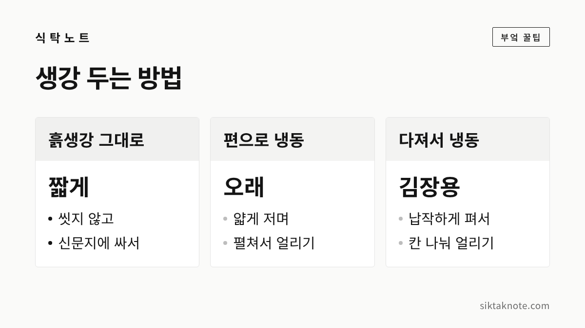
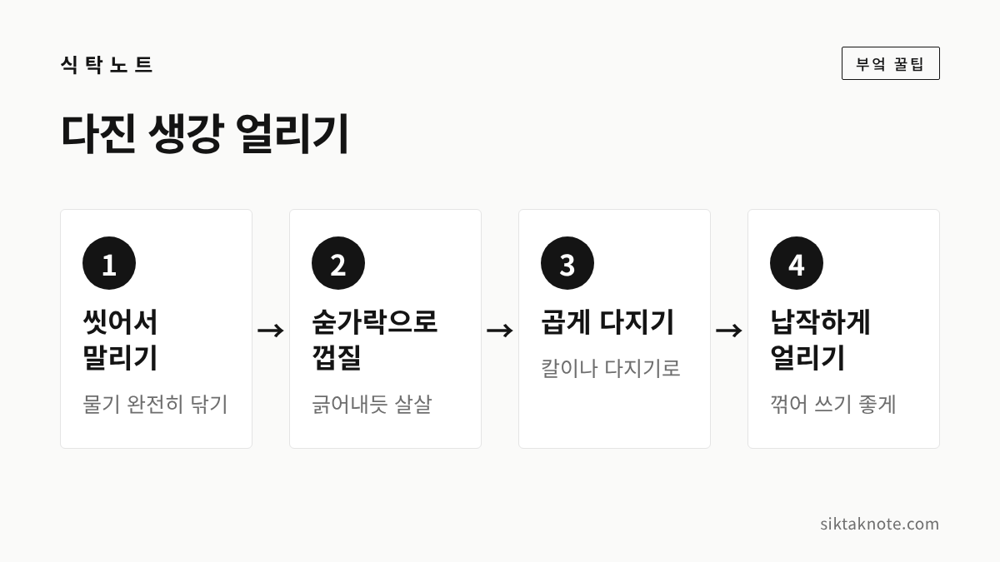

생강 보관법 — 흙생강 보관, 냉장·냉동, 숟가락으로 껍질 벗기기

3줄 요약
- 흙생강은 씻지 말고 흙이 묻은 그대로 신문지에 싸 두는 게 좋습니다.
- 생강은 너무 차가운 곳을 싫어해서, 냉장은 짧게 두고 오래 둘 건 손질해 얼려요.
- 무르거나 곰팡이가 퍼진 생강은 그 부분만 잘라 쓰지 말고 버리는 게 안전합니다.

생강은 한 번 사면 한 톨을 다 쓰기가 쉽지 않은 재료인데요. 냉장고 한쪽에 두었다가 쪼글쪼글 말라 있거나, 어느새 곰팡이가 핀 걸 발견하는 일이 잦습니다. 가을 햇생강이 나오고 김장 준비도 시작되는 때라, 이번에 생강 두는 법을 한 번 정리해 두시면 좋겠습니다.
생강은 너무 차가운 걸 싫어해요
생강은 따뜻한 곳에서 자라는 작물이라 찬 데 약한 편입니다. 농촌진흥청 국립농업과학원 자료를 보면, 농가 저장고에서는 생강을 13℃, 습도 96% 조건으로 맞춰 저장하라고 안내하고 있어요. 10℃ 이하에서 저장하면 생리적인 냉해를 입을 수 있고, 습도가 90% 이하로 떨어지면 썩는 비율이 늘어난다고 합니다.
전북 완주에는 구들을 데워 겨울에도 생강을 따뜻하게 지켜 온 온돌식 생강 토굴이 전해 오는데요. 이 토굴은 13℃ 안팎을 유지해 생강이 얼거나 썩지 않게 했다고 알려져 있습니다. 2019년에는 국가중요농업유산으로 지정되기도 했고요.
물론 집에서 13℃에 습도까지 맞추기는 어렵죠. 그래서 집에서는 "가까운 날 쓸 건 짧게 보관, 오래 둘 건 손질해서 냉동"으로 나눠 생각하시면 편합니다.

흙생강은 씻지 않고 그대로 둡니다
흙이 묻은 생강을 사 왔다면 바로 씻지 마세요. 씻고 나면 껍질에 물기가 남고 작은 상처가 생겨서, 그 자리부터 무르기 쉽거든요.
- 무르거나 곰팡이가 보이는 덩이는 먼저 골라냅니다.
- 흙은 털어 내기만 하고 씻지 않습니다.
- 신문지나 키친타월로 감싸 마르지 않게 합니다.
- 비닐봉지에 담되 입구는 살짝 열어 두고, 서늘한 곳이나 냉장고 채소칸에 둡니다.
냉장고는 생강에게 다소 차가운 곳이라, 채소칸에 넣었다면 오래 두지 말고 되도록 빨리 쓰시는 게 좋습니다. 며칠 사이에 다 못 쓸 것 같다면 아래처럼 손질해서 얼려 두세요.

껍질은 숟가락으로 긁어요
생강은 울퉁불퉁해서 칼로 깎으면 살까지 두껍게 깎여 나가는데요. 숟가락 끝으로 껍질을 긁어내듯 밀면 얇은 껍질만 쉽게 벗겨집니다.
- 생강을 씻어 흙을 털고, 마디마다 똑똑 꺾어 작게 나눠요. 그래야 사이사이 흙을 씻어 내기 쉽습니다.
- 숟가락을 생강에 비스듬히 대고, 바깥쪽으로 살살 긁어 줍니다.
- 마디가 움푹 들어간 곳은 숟가락 끝이나 칼끝으로 조금만 도려내면 됩니다.
햇생강은 껍질이 얇아서 숟가락으로 더 잘 벗겨지는 편입니다.

편으로 썰어 얼리기
차를 끓이거나 고기 잡내를 잡을 때 쓸 생강은 얇게 저며 얼려 두면 편합니다.
- 껍질 벗긴 생강을 얇게 저미고, 물기를 키친타월로 닦아요.
- 쟁반에 겹치지 않게 펼쳐 먼저 얼립니다.
- 단단히 언 다음 지퍼백에 모아 담고, 공기를 빼서 냉동실에 넣어요.
이렇게 하면 서로 붙지 않아 필요한 만큼 몇 쪽씩 꺼내 쓸 수 있습니다. 봉지에 날짜를 적어 두시면 먼저 얼린 것부터 쓰기 좋습니다.

김장용 다진 생강은 납작하게 얼려요

김장 때는 생강이 한꺼번에 꽤 들어가는데요. 미리 다져서 얼려 두면 김장 날 일이 훨씬 줄어듭니다.
- 생강을 씻어 물기를 완전히 닦고, 숟가락으로 껍질을 벗겨요.
- 칼이나 다지기로 곱게 다집니다.
- 지퍼백에 담아 얇고 납작하게 펴고, 공기를 뺀 뒤 젓가락으로 꾹꾹 눌러 칸을 나눠 줍니다.
- 그대로 평평하게 눕혀 얼려요.
얼고 나면 칸대로 똑똑 부러뜨려 필요한 만큼만 꺼내 쓸 수 있습니다. 얼음 틀에 한 칸씩 채워 얼린 뒤 지퍼백에 옮겨 담아도 괜찮습니다. 생강 향이 강해서 다른 음식에 냄새가 밸 수 있으니, 지퍼백은 꼭 잘 닫아 두세요.
김장 양념에 넣을 때는 해동하지 않고 언 채로 넣어도 양념과 섞이면서 금방 풀립니다.

이런 생강은 버립니다
껍질이 조금 쪼글쪼글해졌더라도 속이 단단하고 향이 살아 있다면 쓰셔도 됩니다. 하지만 아래 같은 생강은 먹지 않는 게 좋겠습니다.
- 눌렀을 때 물컹하고 즙이 배어 나오는 생강
- 겉에 곰팡이가 피어 있고, 잘라 보니 속까지 색이 변해 있는 생강
- 시큼하거나 퀴퀴한 냄새가 나는 생강
농촌진흥청 자료에서도 저장 중인 생강은 독성 곰팡이와 곰팡이독소가 생기지 않게 관리해야 한다고 강조하고 있는데요. 식품의약품안전처는 곰팡이독소가 열에 강해 끓여도 완전히 없애기 어렵고 식품 안쪽으로 스며들 수 있으니, 곰팡이 핀 부분만 도려내고 먹는 것도 안전하지 않다고 안내합니다. 아깝더라도 곰팡이가 퍼진 덩이는 통째로 버리시는 게 마음 편합니다. 같은 봉지에 있던 생강도 한 번씩 꺼내서 살펴보세요.
자주 묻는 질문
생강을 물에 담가 두면 오래 가나요?
물에 담가 두면 마르지는 않지만, 물을 자주 갈지 않으면 금방 무르거나 상할 수 있습니다. 집에서는 신문지에 싸 두거나 얼리는 쪽이 관리하기 쉬워요.
냉동한 생강은 향이 덜한가요?
얼렸다 녹으면 조직이 물러져서 생으로 썰어 먹는 데는 덜 어울립니다. 대신 차, 양념, 볶음처럼 익히거나 섞어 쓰는 요리에는 불편함 없이 쓰실 수 있습니다.
싹이 난 생강은 먹어도 되나요?
생강은 땅속줄기라 싹이 트기도 하는데요. 싹이 났다는 건 그만큼 오래 두었다는 뜻이니, 속이 단단한지와 곰팡이·무른 곳이 없는지를 먼저 살펴보세요.
생강은 조금씩 오래 쓰는 재료라, 한 번 손질해 얼려 두면 겨울 내내 든든합니다. 김장 양념에 같이 들어가는 고춧가루 보관법, 마늘 보관법, 대파 보관법도 함께 봐 두세요.